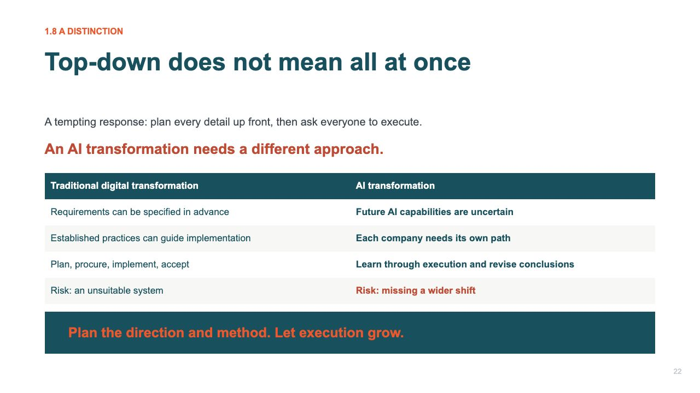

不同產出，共用同一份依據
文案、演講與正式文書，不應各自另造一套公司事實、術語或產品描述。
先明確受眾、目的、限制與適用事實，再由 AI 取用相關知識，依標準準備初稿。
從內容，到可以審閱的成品
AI 可協助形成提綱、撰寫文案、組成幻燈片並檢查術語或版式；人審閱含義、重點與發佈。
發言引文附會議來源，公司與產品事實沿用共同資料。
已有成果
已形成英文文案、演講版本及其他正式材料，並積累可複用的事實與語言標準。
我的投入
我提供觀點、判斷與受眾重點；AI 協助取材、組織、起草、排版與檢查。
案例 04 / AI 工作體系
把積累的知識、受眾要求、術語及審閱連起來，形成不同格式、口徑一致的對外材料。

文案、演講與正式文書，不應各自另造一套公司事實、術語或產品描述。
先明確受眾、目的、限制與適用事實，再由 AI 取用相關知識，依標準準備初稿。
AI 可協助形成提綱、撰寫文案、組成幻燈片並檢查術語或版式；人審閱含義、重點與發佈。
發言引文附會議來源，公司與產品事實沿用共同資料。
已形成英文文案、演講版本及其他正式材料，並積累可複用的事實與語言標準。
我提供觀點、判斷與受眾重點；AI 協助取材、組織、起草、排版與檢查。